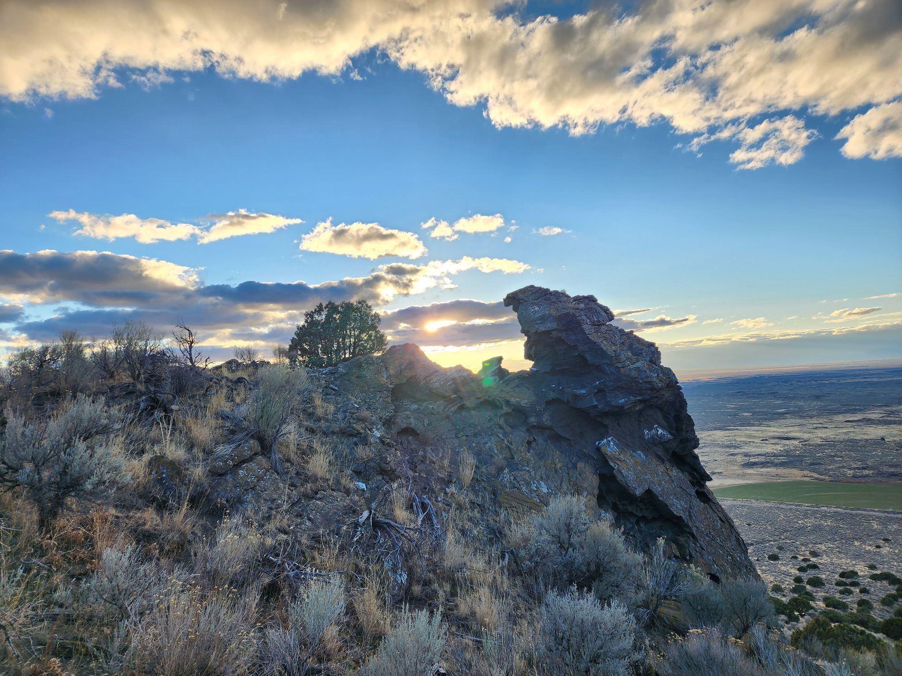

Packsaddle Lake
Packsaddle Lake is an amazing hike. It is the farthest away form rexburg on my list of hikes but it is definetly one that you have to do at least once. You can park at the bottom of the mountain and hike all the way up or if you have a more adventerous vehichle you can drive to the top and hike down to the lake. Either way you are left with a beautiful and peacful lake secluded in the mountians.
Webster Damn

Webstster damn is probably my personal favorite of spots on this list. This is the only spot on the list where there are hardly any people there. It is a serene and cozy little valley with a quaint and calming waterfall that yiou can sit at the top of by the pretty pond or climb down below in the messy falls. It is perfect no matter what you are looking for.
Cress Cree trailk

Cress Creek Trail is very beautiful and it lies right above the snake river giving it a beautiful view. A large portion of the trai is also wheel chair accessible making it a great hike for when the grandparents come and visit.
Menan Butte
Menan Butte is the old reliable of rexburg. It is the closest hike to rexburg and is short and sweet. It can be a little steep for the amateur hiker but with one or two breaks they will be fine because it is not that long. Once you get to the top you can turn around and head back down or you can explore the bowl of this erupted volcano.